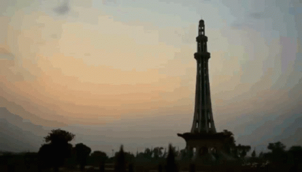
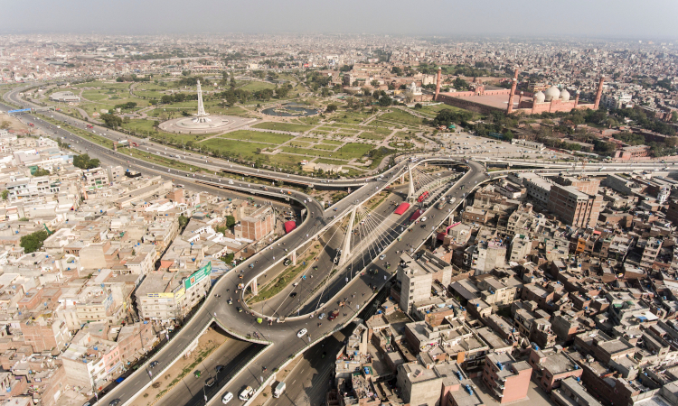
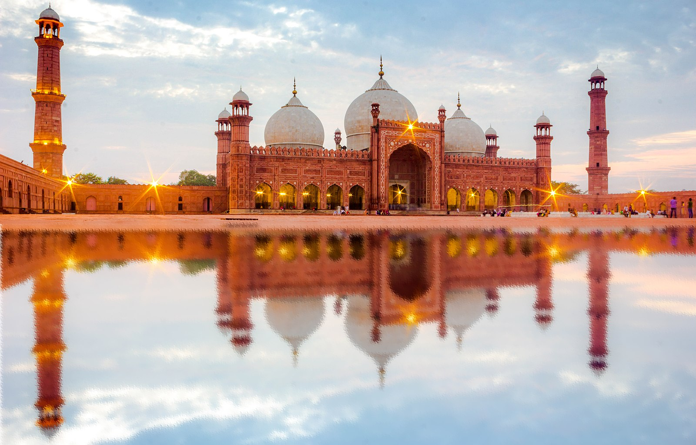
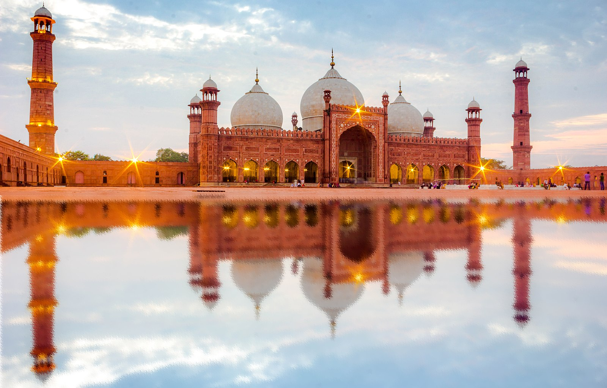
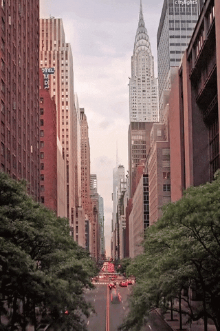
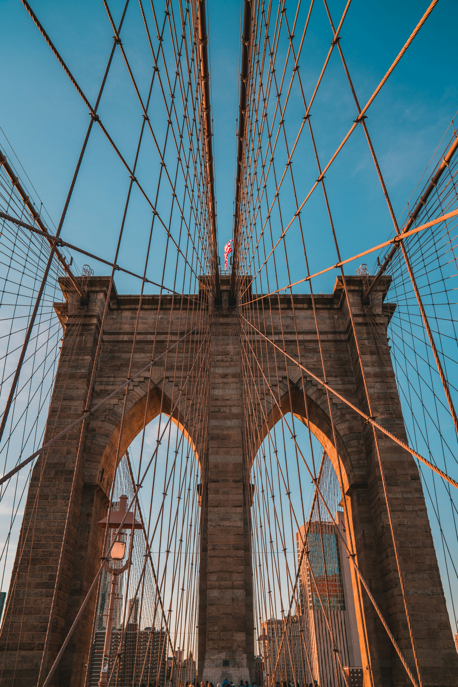
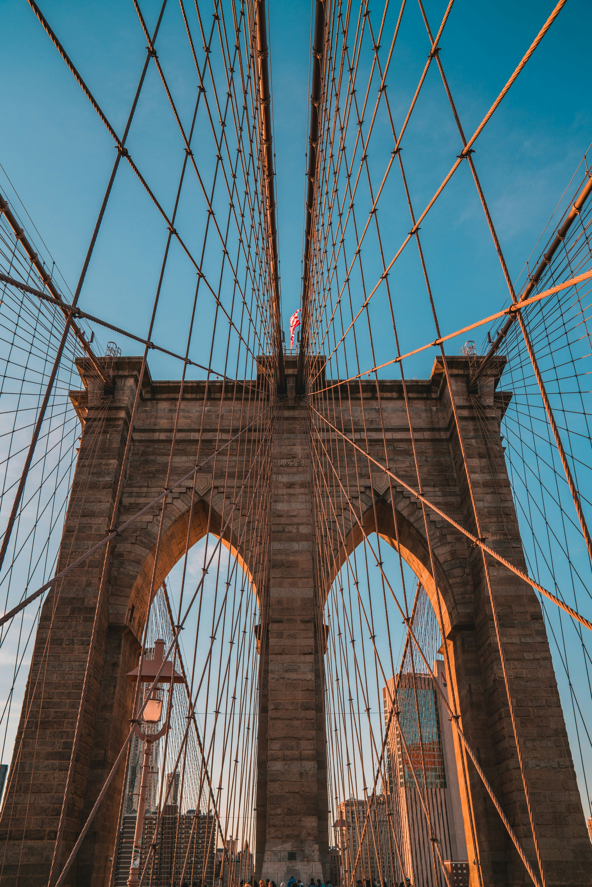

Travel
Rome


Geographical location: Europe
Rome is one of the oldest metropolitan areas in the world. With a history dating back to 700 BC with the birth of the Roman Empire, the city has maintained its status as a cultural and historical hub of Europe. The city is peppered with ancient monuments, statues, and piazzas from different eras of history. The most famous location, the Colosseum, is touted as one of the seven modern wonders of the world. Rome houses several world famous museums, such as the Borghese and the Vatican Museum. It is also the only city in the world to encompass a recognized country, Vatican City
Rome is also a great location for food, wine, and leisure. At the heart of Italy, Rome is a central gathering place for a diverse array of Italian cuisine; Neapolitan Pizza from the south, Tuscan wine, and truffle from the north. Rome’s most famous dish is carbonara. Beyond the food, Rome has a vibrant nightlife. The Trastevere neighborhood has plenty of bars and clubs for patrons and, just over the river, Centro’s shopping district is always bustling.
Photo Gallery


Lahore
 Geographical location: Asia
Lahore, often referred to as the "Heart of Pakistan," is a vibrant and historic city that seamlessly blends tradition with modernity. Nestled in the Punjab region, Lahore boasts a rich cultural heritage dating back centuries. The city is renowned for its magnificent Mughal architecture, exemplified by the iconic Badshahi Mosque and Lahore Fort, both UNESCO World Heritage Sites. The bustling streets of Lahore are a testament to the city's lively atmosphere, where the aromatic waft of street food mingles with the vibrant colors of bazaars and the melodic sounds of traditional music. Lahore is also a hub for educational and artistic endeavors, hosting numerous universities, museums, and theaters, making it a dynamic center for intellectual and cultural exchange.
Furthermore, Lahore is celebrated for its warm and hospitable people who take pride in their cultural traditions. The Lahori spirit is evident in the city's love for festivities, with grand celebrations during events like Basant, a kite-flying festival, and the lively street processions during religious and cultural events. Lahore's culinary scene is another highlight, offering a delectable array of traditional Pakistani dishes, including the famous Lahori kebabs and aromatic biryanis. As a city that beautifully marries its historical legacy with the pulse of modern life, Lahore continues to captivate both locals and visitors alike.
Photo Gallery
 

New York

Geographical location: North America
New York, the city that never sleeps, stands as a symbol of dynamism, diversity, and innovation. Nestled in the heart of the United States, the metropolis is a bustling mosaic of towering skyscrapers, iconic landmarks, and a rich tapestry of cultures. From the bright lights of Times Square to the tranquility of Central Park, New York City offers an unparalleled urban experience. The city's skyline, dominated by landmarks like the Empire State Building and One World Trade Center, reflects its status as a global financial and cultural hub.
Beyond its architectural marvels, New York is a melting pot of cultures, languages, and cuisines. Each neighborhood has its own unique character, from the historic charm of Greenwich Village to the trendy energy of Williamsburg in Brooklyn. The city's world-class museums, such as the Metropolitan Museum of Art and the Museum of Modern Art (MoMA), showcase an extensive array of artistic treasures. Broadway, located in the famed Theater District, remains the pinnacle of live entertainment, attracting theater enthusiasts from around the world.
Photo Gallery

 
